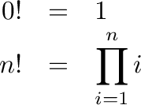
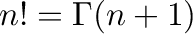

Next: copy
Up: Functions/Unary Operators
Previous: Gamma
Contents
Returns the factorial of its argument:

The operator can be placed on the canvas in two ways:
- From the Functions (``function'') toolbar; or
- By typing the letters ``fact'' on the canvas and then pressing the
Enter key.
Note:

which is how it is implemented in Minsky.
Minsky provides this function because of its relationship to
the derivative of the Gamma function (and factorials).